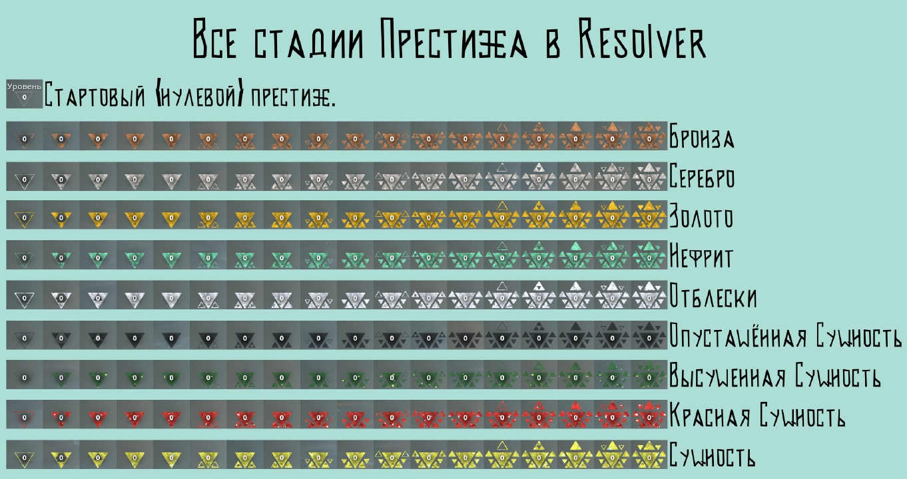

Исправлен баг из-за которого игра может крашится несколько раз при первом запуске и подключении к другому игроку!
Добавлено:
- Перекрашенная маска старейшины Рисрина (2999 ) 6999
- Двойные перчатки претендента 90 (Временно доступен в магазине)
- Боккэн 60
- Меч Адалийского генерала (300 ) 12000
Изменения:
Система престижа:
- Добавлены промежуточные стадии заполнения треугольников
(так-же были изменены и маски оригинальных стадий, что-бы они больше не перемещались и не меняли размер)
- + ещё 5 уровней престижа
(Отблески, Опустошённая Сущность, Высушенная Сущность, Красная Сущность, Сущность)

Стили
- Восстановление выносливости у парирования снижены с 30 до 15, а у уворотов возвращено к 25.
- Эффект на защиту у Останавливающей атаки уменьшен с 75 до 50
- Длительность оглушения от парирования увеличено с 14 до 18 кадров
Атаки
- Отталкивание Plexus Elbow уменьшено с 3м до 2м
NPC
- У 2-х NPC из Падения изменены деки что-бы можно было изучить все атаки добавляемые модом
Способности боссов Падения
- Все способности боссов теперь требуют 6 обломков
(теперь игроки у которых остались способности боссов из Absolver+ или других модов, не смогут их использовать)
- 1-ый и 2-ой боссы Падения теперь имеют 12 максимум обломков, а Арселл получает 12 обломков во время перехода на следующую фазу
(нужно что-бы боссы могли спокойно использовать свои способности)